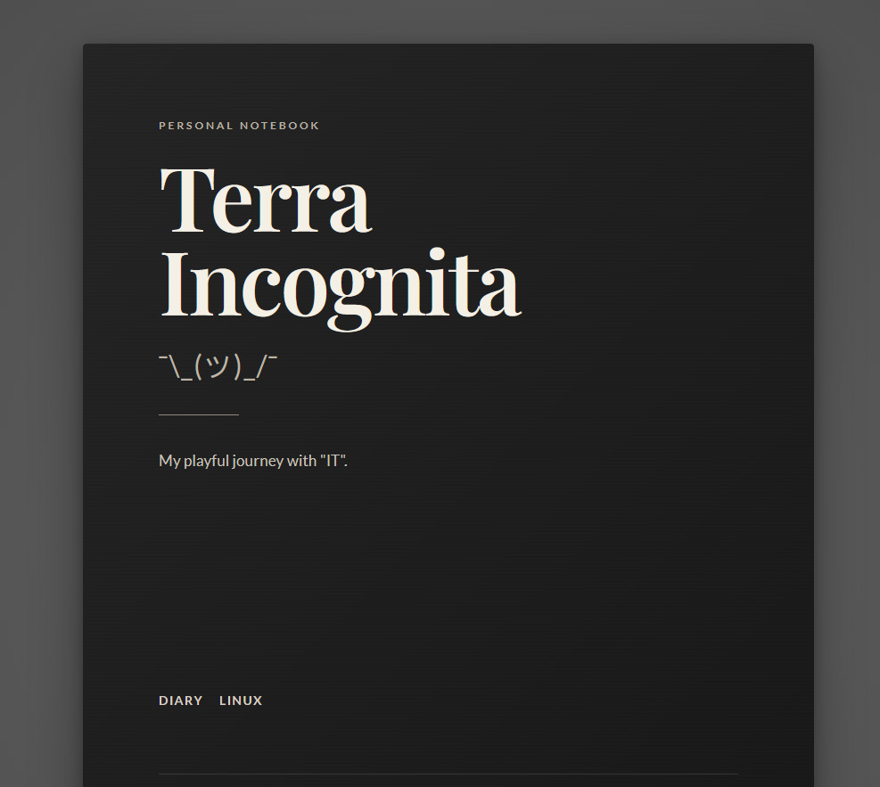

Once I got the automation going (that uses my Github repository as the source of truth and pushes all changes to the webserver), I started working on the design. For now, I asked ChatGPT for a book alike layout. This most probably will change as I continue working on this project.
